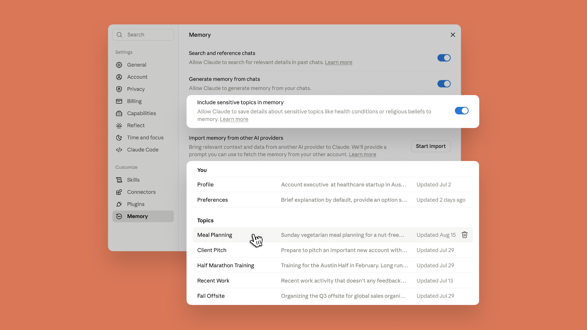
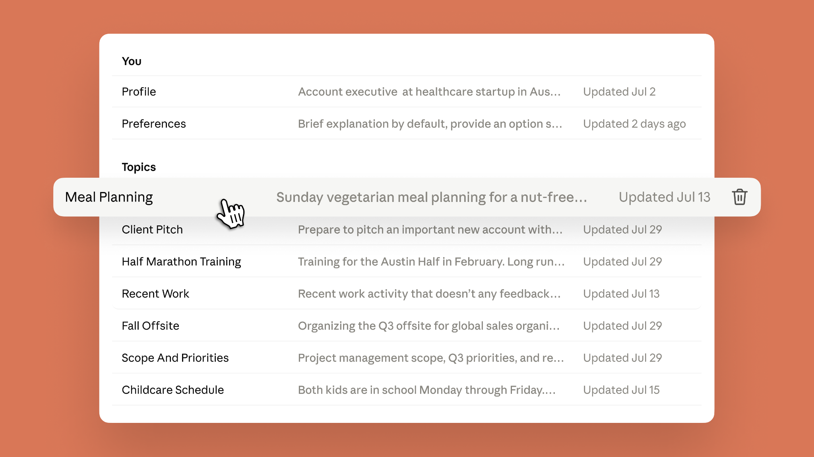
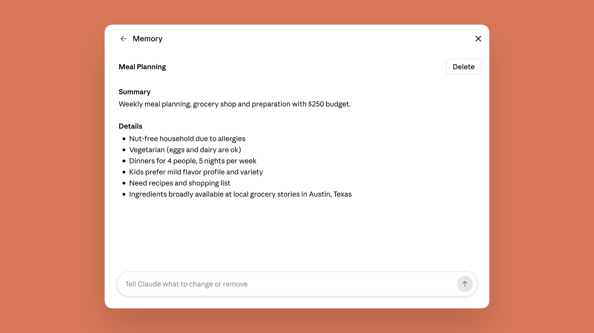

Starting today, the memory you use in chat is the same as in Claude Cowork. Now, wherever you work with Claude, it starts from what it already knows about you. You can see everything Claude remembers, topic by topic, and edit or delete any of it. Claude does not store subjects considered sensitive, like health or beliefs, to memory by default, but if those are the topics you're tired of re-explaining, you can turn them on in Memory settings.

One memory across Claude Cowork and chat
Cowork now has memory, and it’s the same one you use in chat, leading to less re-explaining and more picking up where you left off. When Cowork runs a task in the cloud, what Claude remembers from your chats is there, and vice versa. The context you've built up across months of conversations—for instance, your Q3 priorities and the status of your projects—is there the moment you hand Cowork a task, and what comes up in Cowork carries back to chat.
Ask Cowork to draft an update for your manager, and it already knows who that is and how she likes updates written. Brainstorm the agenda in chat for a conference you’re organizing; when Cowork builds the budget and logistics doc, it knows the headcount, the city, and the speakers. Explain once in chat how your team defines its metrics, and every quarterly business review deck Cowork builds after that uses them, with no rebriefing.
Memory updates as you chat
Claude now adds topics to memory as you chat, instead of summarizing conversations after they end. Mention that your project deadline moved to September, and your next conversation already knows without you having to say "remember this." You can pause memory or reset it at any time.
See and edit your saved memories
Everything Claude remembers is in a list of files under Topics in Memory settings, where you can read, edit, or delete each one. The files are short, and a fix pays off everywhere: correct your company's old name in one file and every conversation from then on gets it right.


Decide if you want Claude to remember sensitive topics
By default, Claude does not store topics related to personal or sensitive subject matter, like your health, race, ethnicity, religious beliefs, politics, gender identity, and other similar areas.
But what some consider sensitive, others may consider useful for Claude to remember. If you choose to turn on “include sensitive topics in memory,” Claude will remember things like your gluten allergy when suggesting recipes for weekly meal prep.
With the setting turned on, each time Claude saves something on one of these topics to memory, you’ll see a notice. Claude saves sensitive topics going forward. Anything from before you turned it on isn't saved retroactively. You can turn off this setting at any time.
To protect your safety and privacy, there are some topics that Claude does not store even when you have sensitive topics in memory turned on. This includes sensitive identification numbers (SSN, government ID numbers, etc), criminal history, immigration status, or anything that violates our Acceptable Use Policy (AUP) in its memory. Claude will inform you when it's unable to update memory to include any of this information. Visit the Help Center to learn more.
Getting started
Memory is on by default on Free, Pro and Max plans across web, desktop, and mobile. Note that saving sensitive topics in memory is off by default. On iOS and Android, update to the latest version of the mobile app to get the most recent updates. For Team and Enterprise, admins control availability for their organization, and memory is off for individual users until they turn it on.
Visit Settings > Memory to turn memory on and control what Claude remembers.